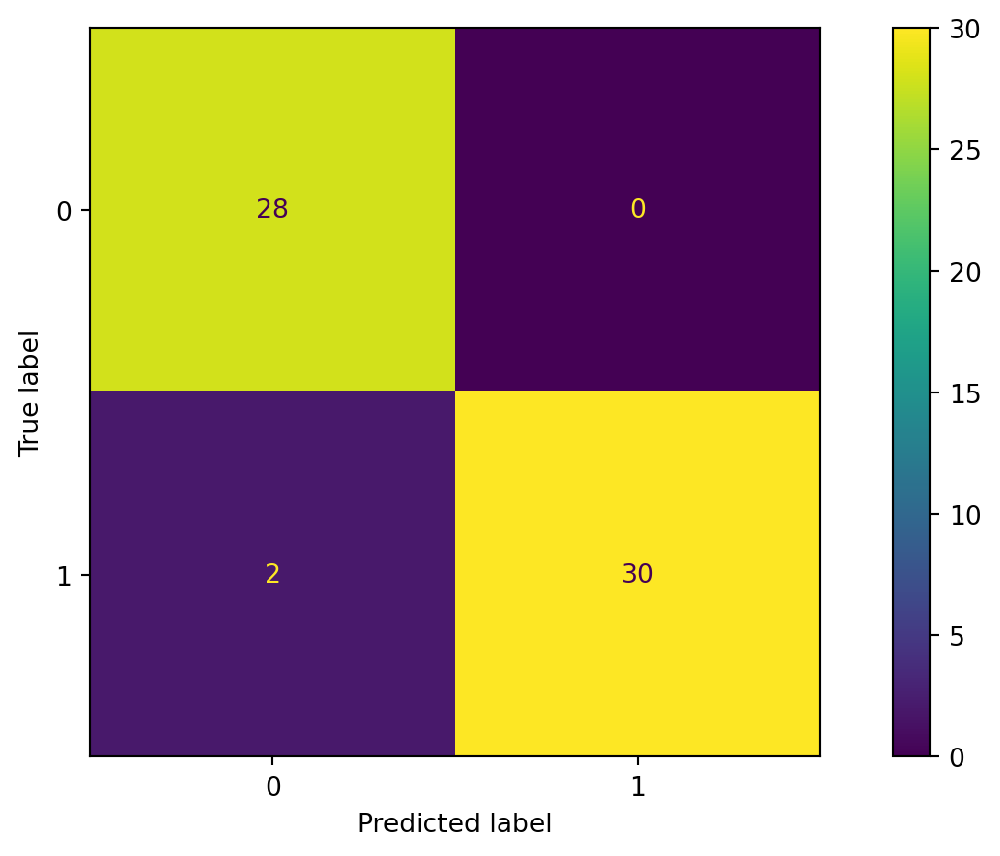

# Importing necessary libraries
import pandas as pd
import matplotlib.pyplot as plt
import seaborn as sns
import statsmodels.api as sm
from sklearn.model_selection import train_test_split
from sklearn.metrics import confusion_matrix, ConfusionMatrixDisplay, accuracy_scoreLogistic Regression
IN1002B: Introduction to Data Science Projects
Agenda
- Introduction
- Logistic regression
- Estimating a logistic regression model
- Classification performance
Introduction
Load the libraries
Before we start, let’s import the data science libraries into Python.
Here, we will introduce the functions confusion_matrix(), ConfusionMatrixDisplay() and accuracy_score() to evaluate the performance of a logistic regression classifier.
Two main problems
Regression problems. The response \(Y\) is quantitative. For example, person’s income, the value of a house, the blood pressure of a patient.
Classification problems. The response \(Y\) is qualitative and involves \(K\) different categories. For example, the brand of a product purchased (A, B, C) whether a person defaults on a debt (yes or no).
The predictors (\(\boldsymbol{X}\)) can be qualitative or quantitative.
Terminology
Explanatory variables or predictors:
- \(X\) represents an explanatory variable or predictor.
- \(\boldsymbol{X} = (X_1, X_2, \ldots, X_p)\) represents a collection of \(p\) predictors.
Response:
\(Y\) is a categorical variable taking 2 categories or classes.
For example, \(Y\) can take 0 or 1, A or B, no or yes, spam or not spam.
When the classes are strings, it is customary to code them to 0 and 1.
- The target class is the one for which \(Y = 1\).
- The reference class is the one for which \(Y = 0\).
Goal: Find the best function \(C(\boldsymbol{X})\) for predicting \(Y = \{0, 1\}\) from \(\boldsymbol{X}\).
. . .
To achieve this goal, we will consider functions \(C(\boldsymbol{X})\) that predict the probability that \(Y\) takes the value of 1.
. . .
A probability for each class can be very useful for gauging the model’s confidence about the predicted classification.
Example 1
Consider a spam e-mail filter where \(Y\) is the type of e-mail.
- The target class is spam. In this case, \(Y=1\).
- The reference class is not spam. In this case, \(Y=0\).
. . .

. . .
Both e-mails would be classified as spam. However, we’d have more confidence in our classification for the second email.
Technically, \(C(\boldsymbol{X})\) will work with the conditional probability:
\[P(Y = 1 | X_1 = x_1, X_2 = x_2, \ldots, X_p = x_p) = P(Y = 1 | \boldsymbol{X} = \boldsymbol{x})\]
In words, this is the probability that \(Y\) takes a value of 1 given that the predictors \(\boldsymbol{X}\) have taken the values \(\boldsymbol{x} = (x_1, x_2, \ldots, x_p)\).
. . .
The conditional probability that \(Y\) takes the value of 0 is
\[P(Y = 0 | \boldsymbol{X} = \boldsymbol{x}) = 1 - P(Y = 1 | \boldsymbol{X} = \boldsymbol{x}).\]
Bayes Classifier
It turns out that, if we know the true structure of \(P(Y = 1 | \boldsymbol{X} = \boldsymbol{x})\), we can build a good classification function called the Bayes classifier:
\[C(\boldsymbol{X}) = \begin{cases} 1, & \text{if}\ P(Y = 1 | \boldsymbol{X} = \boldsymbol{x}) > 0.5 \\ 0, & \text{if}\ P(Y = 1 | \boldsymbol{X} = \boldsymbol{x}) \leq 0.5 \end{cases}.\]
This function classifies to the most probable class using the conditional distribution \(P(Y | \boldsymbol{X} = \boldsymbol{x})\).
HOWEVER, we don’t (and will never) know the true form of \(P(Y = 1 | \boldsymbol{X} = \boldsymbol{x})\)!
. . .
To overcome this issue, we have a standard solution:
- Impose an structure on \(P(Y = 1 | \boldsymbol{X} = \boldsymbol{x})\).
- This structure produces the Logistic Regression classifier.
. . .
Before we introduce logistic regression, we will present another motivating example.
Example 2
Consider the task of identifying old-swiss counterfeit banknotes. The response under study is
\[Y = \begin{cases} 1, & \text{if it is a counterfeit banknote} \\ 0, & \text{otherwise} \end{cases}.\]
We have four predictors:
- \(X_1\): Left, which is the length of left edge (mm)
- \(X_2\): Right, which is the length of right edge (mm)
- \(X_3\): Top, which is the distance from the image to top edge
- \(X_4\): Bottom, which is the distance from image to bottom
Old-Swiss 1000-franc banknote

Dataset
The data is in the file “banknotes.xlsx”.
bank_data = pd.read_excel("banknotes.xlsx")
# Set response variable as categorical.
bank_data['Status'] = pd.Categorical(bank_data['Status'])
bank_data.head()| Status | Left | Right | Bottom | Top | |
|---|---|---|---|---|---|
| 0 | genuine | 131.0 | 131.1 | 9.0 | 9.7 |
| 1 | genuine | 129.7 | 129.7 | 8.1 | 9.5 |
| 2 | genuine | 129.7 | 129.7 | 8.7 | 9.6 |
| 3 | genuine | 129.7 | 129.6 | 7.5 | 10.4 |
| 4 | genuine | 129.6 | 129.7 | 10.4 | 7.7 |
Data pre-processing
Before we start, we ensure that there are no highly correlated predictors in the dataset. To this end, we construct the correlation plot.
# Remove response.
predictors_full = bank_data.drop(columns = ['Status'])
# Compute correlation matrix.
correlation_matrix = predictors_full.corr()
# Plot the correlation matrix
sns.heatmap(correlation_matrix.abs(), cmap = 'coolwarm', annot = True)
plt.title("Heatmap on correlations") # Set plot title.Text(0.5, 1.0, 'Heatmap on correlations')
The correlation plot shows that the predictors Left (\(X_1\)) and Right (\(X_2\)) have an absolute correlation of 0.74. Using a threshold for high correlation of 0.70, we thus remove one predictor from the database, say, Right.
Consequently, our database for this problem is
bank_data = bank_data.drop(columns = ['Right'])Introduction to logistic regression
Logistic Regression (LR)
Basic Idea: Impose an structure on \(P(Y = 1 | \boldsymbol{X} = \boldsymbol{x})\):
\[P(Y = 1 | \boldsymbol{X} = \boldsymbol{x}) = \frac{e^{\beta_0 + \beta_1 X_1 + \beta_2 X_2 + \cdots + \beta_p X_p} }{1 + e^{\beta_0 + \beta_1 X_1 + \beta_2 X_2 + \cdots + \beta_p X_p}}\]
- This structure is known as the logistic function.
- The logistic function is always between 0 and 1.
Why logistic regression?
Let’s use some algebra to reveal some of interesting facts about logistic regression.
. . .
We start from
\[P(Y = 1 | \boldsymbol{X} = \boldsymbol{x}) = \frac{e^{\beta_0 + \beta_1 X_1 + \beta_2 X_2 + \cdots + \beta_p X_p} }{1 + e^{\beta_0 + \beta_1 X_1 + \beta_2 X_2 + \cdots + \beta_p X_p}}.\]
. . .
Next, we have that
\[e^{\beta_0 + \beta_1 X_1 + \beta_2 X_2 + \cdots + \beta_p X_p} = \frac{P(Y = 1 | \boldsymbol{X} = \boldsymbol{x})}{1 - P(Y = 1 | \boldsymbol{X} = \boldsymbol{x})}.\]
The Odds ratio
The quantity \[e^{\beta_0 + \beta_1 X_1 + \beta_2 X_2 + \cdots + \beta_p X_p} = \frac{P(Y = 1 | \boldsymbol{X} = \boldsymbol{x})}{1 - P(Y = 1 | \boldsymbol{X} = \boldsymbol{x})}\] is known as the “odds” ratio.
The odds ratio is the probability that \(Y = 1\) divided by the probability that \(Y = 0\), given that the predictors \(\boldsymbol{X}\) have taken the values \(\boldsymbol{x} = (x_1, x_2, \ldots, x_p)\).
Consider the banknote classification problem where \(Y = 1\) implies counterfeit and \(Y = 0\) genuine note. We have three predictors in \(\boldsymbol{X} = (X_1, X_3, X_4)\) summarizing specific characteristics of a banknote.
The odds ratio is \(e^{\beta_0 + \beta_1 X_1 + \beta_3 X_3 + \beta_p X_4} = \frac{P(Y = 1 | \boldsymbol{X} = \boldsymbol{x})}{1 - P(Y = 1 | \boldsymbol{X} = \boldsymbol{x})}\)
- If the ratio is 1, the odds are 50-50.
- If the ratio is greater than 1, the banknote is more likely to be counterfeit than genuine.
- If the ratio is smaller than 1, the banknote is more likely to be genuine than counterfeit.
The logg-odds
If we take logarithm on both sides, we obtain the “log-odds” or “logit”:
\[\beta_0 + \beta_1 X_1 + \cdots + \beta_p X_p = \ln \left( \frac{P(Y = 1 | \boldsymbol{X} = \boldsymbol{x} )}{1 - P(Y = 1 | \boldsymbol{X} = \boldsymbol{x})} \right).\]
- The log-odds can take any real value.
- The log-odds is a linear combination of the predictors.
- The log-odds resembles a multiple lienar regression model.
Interpretation of coefficients
The log-odds allows us to interpret the coefficients of the logistic regression model.
\[\beta_0 + \beta_1 X_1 + \cdots + \beta_p X_p = \ln \left( \frac{P(Y = 1 | \boldsymbol{X} = \boldsymbol{x} )}{1 - P(Y = 1 | \boldsymbol{X} = \boldsymbol{x})} \right).\]
\(\beta_0\) can be interpreted as the average value of the log-odds ratio given that all predictors are equal to zero.
\(\beta_j\) can be interpreted as the average change in the log-odds ratio given by a one-unit increase in \(X_j\), when all the other predictors have fixed values.
If \(\beta_j\) is positive, increasing the value of \(X_j\) will be associated with increasing the odds ratio or \(P(Y = 1 | \boldsymbol{X} = \boldsymbol{x})\). In other words, increasing the value of \(X_j\) increases, on average, the probability that \(Y = 1\).
If \(\beta_j\) is negative, increasing \(X_j\) will be associated with decreasing \(P(Y = 1 | \boldsymbol{X} = \boldsymbol{x})\), and with increasing \(P(Y = 0 | \boldsymbol{X} = \boldsymbol{x})\). In other words, increasing the value of \(X_j\) increases, on average, the probability that \(Y = 0\).
Estimating a logistic regression model
The logistic regression model
The logistic regression model is
\[P(Y = 1 | \boldsymbol{X} = \boldsymbol{x}) = \frac{e^{\beta_0 + \beta_1 X_1 + \beta_2 X_2 + \cdots + \beta_p X_p} }{1 + e^{\beta_0 + \beta_1 X_1 + \beta_2 X_2 + \cdots + \beta_p X_p}},\]
where the values of the coefficients \(\beta_0\) and \(\beta_j\) are unknown. Therefore, we need to calculate estimates for them.
- \(\hat{\beta}_0\) is the estimate for \(\beta_0\).
- \(\hat{\beta}_j\) is the estimate for \(\beta_j\).
How do we estimate the coefficients?
We use the training data!
| Status | Left | Bottom | Top | |
|---|---|---|---|---|
| 0 | genuine | 131.0 | 9.0 | 9.7 |
| 1 | genuine | 129.7 | 8.1 | 9.5 |
| 2 | genuine | 129.7 | 8.7 | 9.6 |
| 3 | genuine | 129.7 | 7.5 | 10.4 |
Generate training data
We split the current data set into a training and a validation dataset. To this end, we use the function train_test_split() from scikit-learn.
# Set full matrix of predictors.
X_full = bank_data.drop(columns = ['Status'])
# Set full matrix of responses.
Y_full = bank_data['Status']
# Split the dataset.
X_train, X_test, Y_train, Y_test = train_test_split(X_full, Y_full,
test_size=0.3)The parameter test_size sets the portion of the dataset that will go to the validation set.
The function makes a clever partition of the data using the empirical distribution of the response.
Technically, it splits the data so that the distribution of the response under the training and validation sets is similar.
Usually, the proportion of the dataset that goes to the test set is 20% or 30%.
We will later use the validation dataset to evaluate the classification performance of the estimated logistic regression model for classifying unobserved data.
Coefficient estimation
We estimate the coefficients in the logistic function using maximum likelihood estimation.
Essentially, we optimize a non-linear objective function using the so-called Iteratively Re-weighted Least Squares (IRLS) algorithm.
. . .
The IRLS algorithm (and consequently maximum likelihood estimation and Logistic Regression) fails when:
- There is severe multicollinearity among the predictors.
- We can perfectly separate the observations belonging to the two groups defined by \(Y\).
In Python
Using the training dataset, we estimate a logistic regression classifier using the function Logit() from statsmodel. To this end, we first define the target category using the get_dummies().
# Create dummy variables.
Y_dummies = pd.get_dummies(Y_train, dtype = 'int')
# Select target variable.
Y_target_train = Y_dummies['counterfeit']We also define the matrix of predictors with the intercept.
# Add the intercept to the predictor matrix.
X_train_int = sm.add_constant(X_train)After that, we fit the model using the function Logit().
# Create logistic regression object.
logit = sm.Logit(Y_target_train, X_train_int)
# Train the model using the training set.
logit_model = logit.fit()
# Show estimated coefficients.
print(logit_model.params)Optimization terminated successfully.
Current function value: 0.052315
Iterations 12
const -391.109191
Left 2.149887
Bottom 4.461783
Top 6.528042
dtype: float64Parameter testing
We can construct significance tests for each coefficient in the logistic regression model. They are called Wald tests.
Wald tests allow us to test the hypothesis:
\[H_0: \beta_j = 0 \text{ versus } H_1: \beta_j \neq 0\]
Wald tests use the following test statistic:
\[W_j = \frac{\hat{\beta}_j}{\mbox{SE}(\hat{\beta}_j) } \sim N(0,1).\]
- \(\hat{\beta}_j\) is the estimate of the coefficient \(\beta_j\).
- \(\mbox{SE}(\hat{\beta}_j)\) is the standard error of the estimate \(\hat{\beta}_j\) (due to repeated random sampling).
Important predictors
We can use the p-values of these tests to determine which predictor is important.
That is, a predictor is important if its p-value is, say, smaller than \(\alpha = 0.05\).
For Wald tests to work well, the number of observations in the training data should be large.
The summary() function of statsmodel contains the Wald tests of the coefficients in the logistic regression model.
logit_summary = logit_model.summary()
print(logit_summary) Logit Regression Results
==============================================================================
Dep. Variable: counterfeit No. Observations: 140
Model: Logit Df Residuals: 136
Method: MLE Df Model: 3
Date: Thu, 29 May 2025 Pseudo R-squ.: 0.9244
Time: 21:15:46 Log-Likelihood: -7.3242
converged: True LL-Null: -96.912
Covariance Type: nonrobust LLR p-value: 1.329e-38
==============================================================================
coef std err z P>|z| [0.025 0.975]
------------------------------------------------------------------------------
const -391.1092 390.450 -1.002 0.316 -1156.377 374.159
Left 2.1499 2.988 0.719 0.472 -3.707 8.006
Bottom 4.4618 1.725 2.587 0.010 1.082 7.842
Top 6.5280 2.201 2.966 0.003 2.214 10.842
==============================================================================
Possibly complete quasi-separation: A fraction 0.49 of observations can be
perfectly predicted. This might indicate that there is complete
quasi-separation. In this case some parameters will not be identified.Classification performance
Estimated classifier
After estimating the coefficients, we obtain the estimated logistic regression model
\[\hat{P}(Y = 1 | \boldsymbol{X} = \boldsymbol{x}) = \frac{e^{\hat{\beta}_0 + \hat{\beta}_1 X_1 + \hat{\beta}_2 X_2 + \cdots + \hat{\beta}_p X_p} }{1 + e^{\hat{\beta}_0 + \hat{\beta}_1 X_1 + \hat{\beta}_2 X_2 + \cdots + \hat{\beta}_p X_p}},\]
where we have replaced the coefficients \(\beta_j\)’s with their estimates \(\hat{\beta}_j\)’s.
Using the estimated logistic regression model, we can build an approximation to the Bayes classifier \(C(\boldsymbol{X})\).
The approximation is
\[\hat{C}(\boldsymbol{X}) = \begin{cases} 1, & \text{if}\ \hat{P}(Y = 1 | \boldsymbol{X} = \boldsymbol{x}) > 0.5 \\ 0, & \text{if}\ \hat{P}(Y = 1 | \boldsymbol{X} = \boldsymbol{x}) \leq 0.5 \end{cases}.\]
- We call \(\hat{C}(\boldsymbol{X})\) the logistic regression classifier.
- \(\hat{C}(\boldsymbol{X})\) can be used to classify new observations.
Evaluation
We evaluate a the logistic regression classifier by classifying observations that were not used for training or estimating it.
That is, we use the classifier to predict the categories of the test dataset using the predictor values in this set only.
In Python, we use the commands:
# Add constant to the predictor matrix from the test set.
X_test = sm.add_constant(X_test)
# Predict probabilities.
predicted_probability = logit_model.predict(X_test)The predict() function outputs probabilities instead of actual classes.
predicted_probability.head()64 0.017035
100 0.999738
51 0.009709
43 0.001314
115 0.256696
dtype: float64These are the probabilities of a banknote being “counterfeit” according to its characteristics (values of the predictors).
To turn the probabilities to actual classes, we round them:
predicted_classes = round(predicted_probability).astype('int')predicted_classes.head()64 0
100 1
51 0
43 0
115 0
dtype: int64- Observations with probabilities higher than 0.5 are classified as “counterfeit”.
- Observations with probabilities lower than 0.5 are classified as “genuine”.
Now, we compare the predictions with the actual categories in the validation dataset. A good logistic regression model has a good agreement between its predictions and the actual categories.
Confusion matrix
A table used to evaluate the performance of a classifier.
Compares the actual values with the predicted values of a classifier.
Useful for both binary and multiclass classification problems.

In Python
We compute the confusion matrix using the function with the same name of scikit-learn.
# Create dummy variables for test set.
Y_dummies = pd.get_dummies(Y_test, dtype = 'int')
# Select target variable from test set.
Y_target_test = Y_dummies['counterfeit']
# Compute confusion matrix.
cm = confusion_matrix(Y_target_test, predicted_classes)
# Show confusion matrix.
print(cm)[[27 0]
[ 1 32]]We can visualize the confusion matrix using the ConfusionMatrixDisplay() function.
ConfusionMatrixDisplay(cm).plot()
Accuracy
A simple metric to summarize the information of the confusion matrix is accuracy. It is the proportion of correct classifications for both classes, out of the total classifications made.
In Python, we compute the accuracy using the function accuracy_score() from scikit-learn.
accuracy = accuracy_score(Y_target_test, predicted_classes)
print( round(accuracy, 2) )0.98The higher the accuracy, the better the performance of the classifier.
Remarks
Accuracy is simple to calculate and interpret.
It works well when the dataset has a balanced class distribution (i.e., roughly equal 1 and 0 cases).
Not ideal for imbalanced datasets. When one class is much more frequent than the other, accuracy can be misleading.
Other summaries of the confusion matrix such as Precision, Recall, and F1-Score are better suited for imbalanced data.